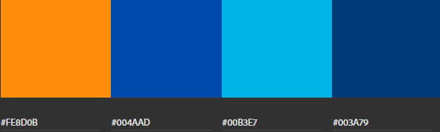

Shannon Payne
Lesson 3 Website Planning Document
Color Scheme
Description
The website will use three shades of blue, and orange for a constrast color. Cobalt blue will be used for navigation links in the header, and in heading text. Light blue will be used as a background color and for icons. Dark blue will be used for buttons. Orange will be used to highlight elements such as horizontal rules or icons.